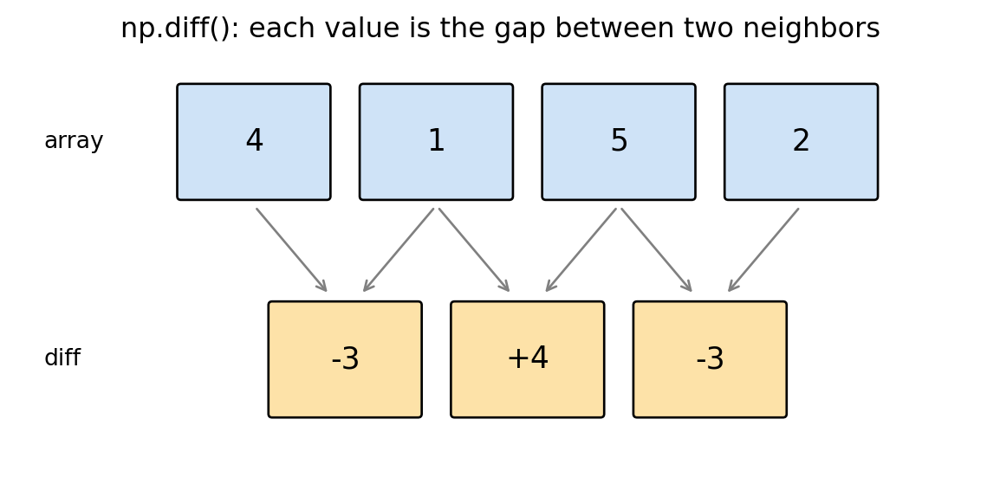
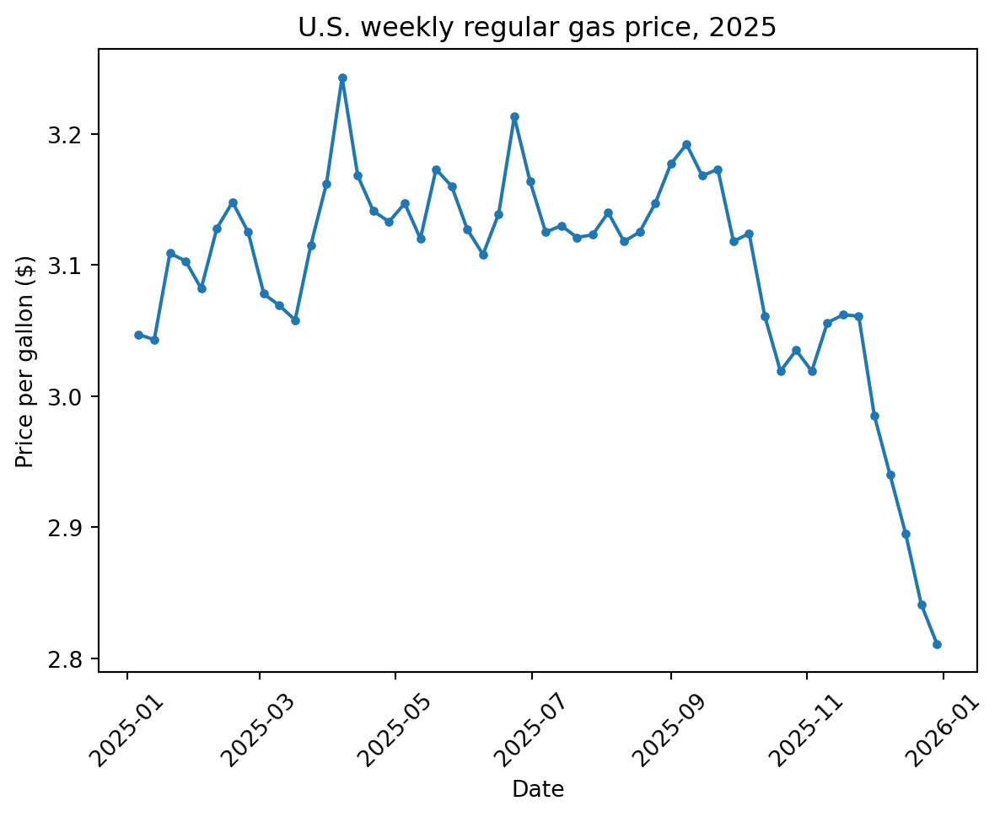
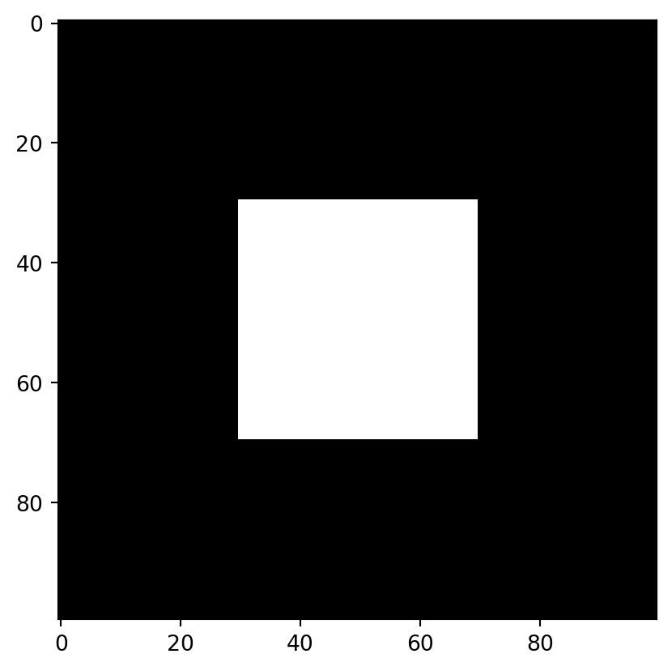
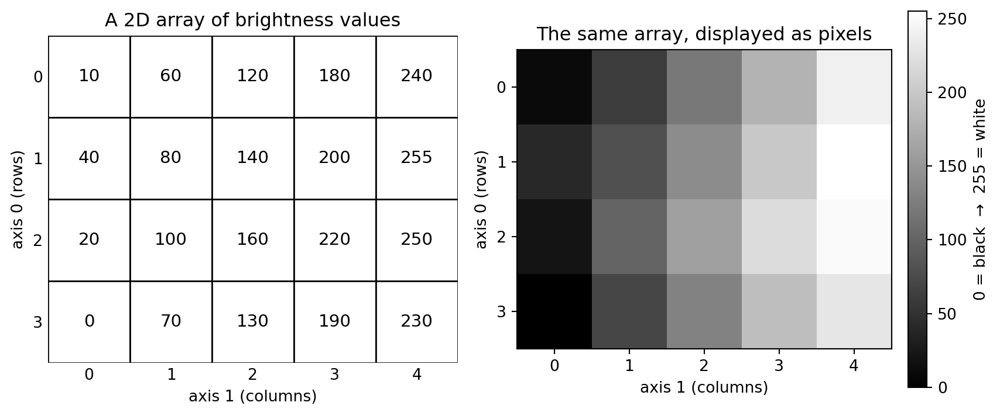
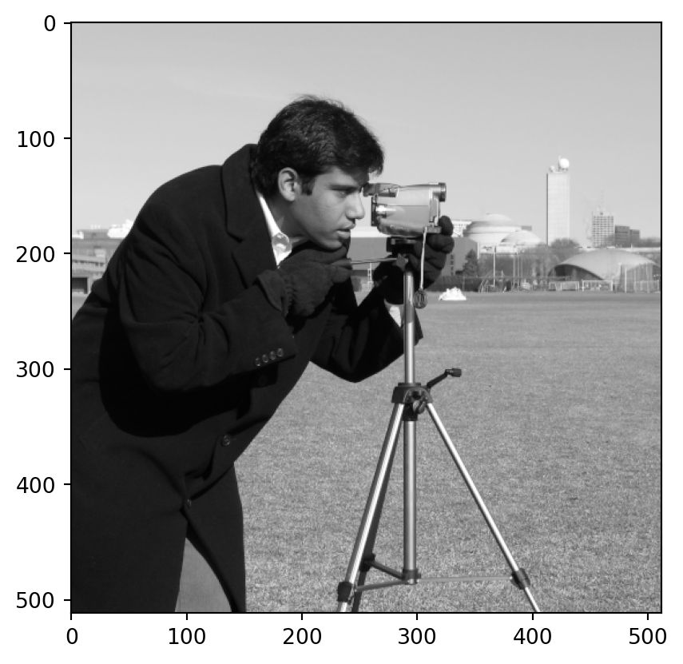
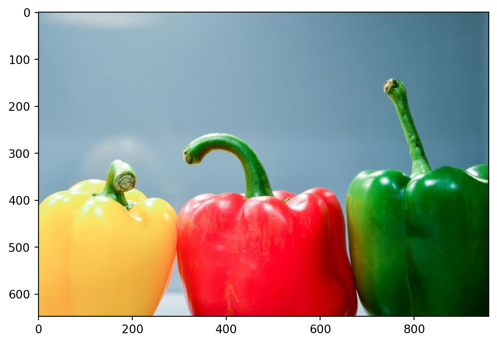
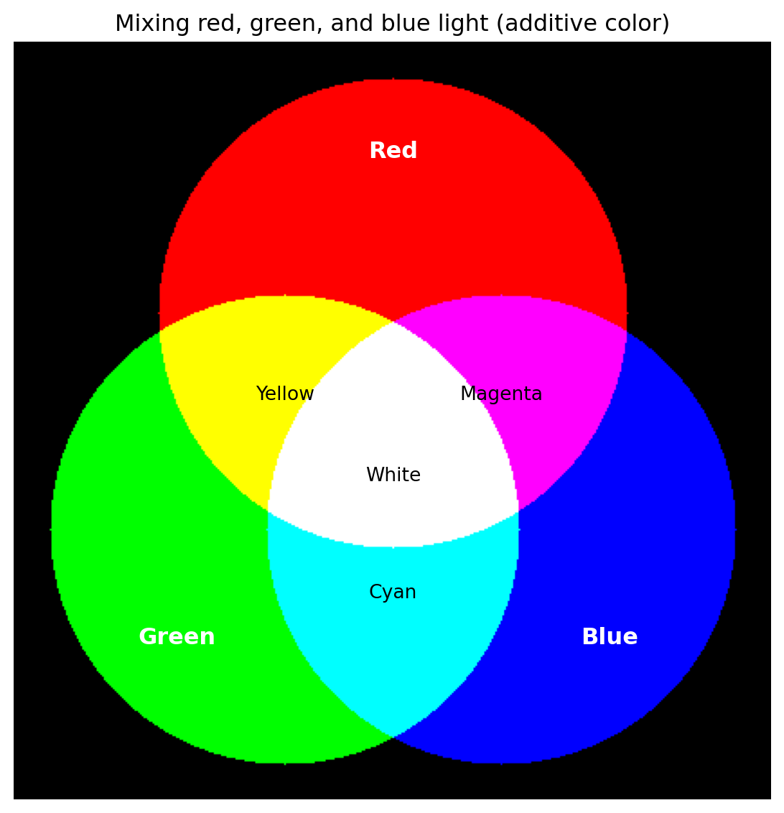
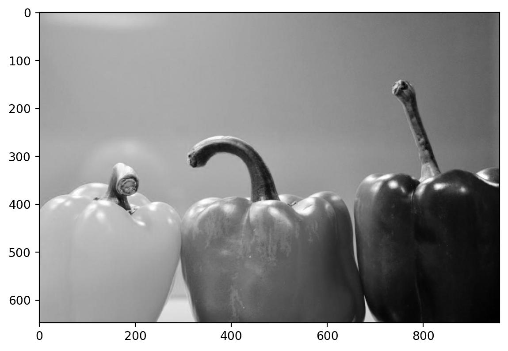
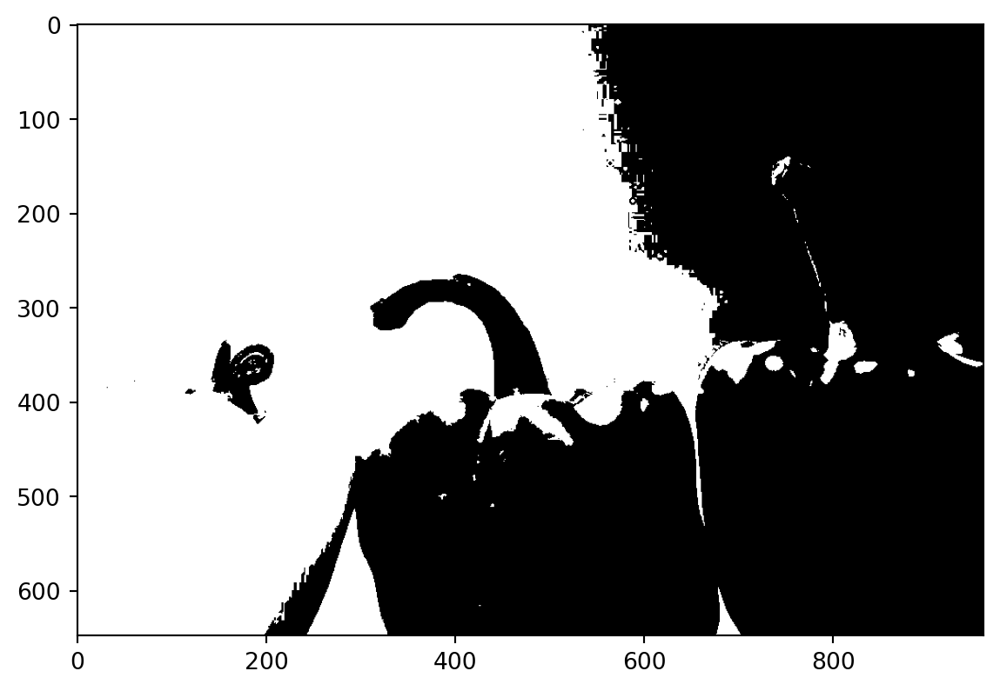

weekly_prices = [3.05, 3.04, 3.11]4 Array computations with NumPy
In the previous chapter we summarized data using plain Python lists, the statistics module, and considerable manual work. That approach worked, but it was tedious: to do almost anything to every value in a list (add a tax to every price, convert every value to different units, or just add two lists of numbers together), we had to handle the values one at a time.
In this chapter we introduce NumPy (short for “Numerical Python”), the standard Python library for working with numerical data. NumPy gives us a new kind of container called an array, which makes numerical computations shorter to write, faster to run, and easier to read. Arrays are the foundation that nearly every other data science tool in Python, including the Pandas package we’ll use later, is built on top of.
By the end of this chapter you’ll be able to load numerical data into arrays, transform and summarize that data in a single step, filter it down to the values you care about, and even treat images as arrays of numbers.
4.1 Why arrays instead of lists?
Let’s start by seeing why lists alone aren’t quite enough. Suppose we have the price of a gallon of gas (in dollars) for three weeks, stored in a list:
Now imagine the government adds a $2-per-gallon tax, and we want the new price for each week. It would be natural to try multiplying or adding to the list, but lists don’t behave the way we might hope:
# Multiplying a list by 2 repeats the list instead of doubling each value
weekly_prices * 2[3.05, 3.04, 3.11, 3.05, 3.04, 3.11]As you can see, that doesn’t double each price: multiplying a list by a number just repeats the list. And adding a number to a list doesn’t work at all; it causes an error. To actually add $2 to each price, we’d have to reach into the list and update each value individually:
# Adding $2 to each price, one value at a time, is tedious
[weekly_prices[0] + 2, weekly_prices[1] + 2, weekly_prices[2] + 2][5.05, 5.04, 5.109999999999999]This works, but imagine doing it for a whole year of weekly prices, or for the thousands of values in a larger dataset. Writing out every element by hand quickly becomes impractical.
Note
Python does have a tool for repeating an action many times without writing it out by hand: the loop, which we cover later in Chapter 7. But for the whole-dataset calculations that are common in data science, the array approach shown in this chapter is usually shorter, faster, and easier to read, so we will favor it throughout the book.
NumPy lets us express the same computation in a single, readable expression. First we need to import the library. By near-universal convention, NumPy is imported under the short name np:
import numpy as npNow we can turn our list into a NumPy array with np.array() and simply add 2:
price_array = np.array([3.05, 3.04, 3.11])
# Add the $2 tax to every price at once
price_array + 2array([5.05, 5.04, 5.11])The operation was applied to every element automatically. This idea, applying an operation to every element of an array at once, is called vectorization, and it is the central idea behind NumPy’s usefulness. Compared to lists, arrays give us three main advantages:
- Ease of expression. Element-wise arithmetic like
price_array + 2lets us say what we mean in a single short expression. - Speed. NumPy performs these operations in fast, pre-compiled code, so computations on large arrays run far faster than handling the values one at a time.
- Memory. Arrays store their values compactly, which means they use less memory than the equivalent list.
For the rest of this chapter we’ll put these ideas to work on a real dataset.
TipExercise
Here are three more weekly gas prices stored in a list: [3.20, 3.15, 3.18]. Turn this list into a NumPy array, then use a single expression (no loop) to apply a 10% discount to every price.
NoteSolution
more_prices = np.array([3.20, 3.15, 3.18])
# Paying 90% of each price applies a 10% discount to every element at once
more_prices * 0.9array([2.88 , 2.835, 2.862])4.2 An example dataset: a year of U.S. gas prices
To explore NumPy we’ll look at the price of gasoline in the United States over the course of a year. Gas prices are a useful example because they change every week, which gives us a natural sequence of numbers to ask questions about: What was the average price? How much did the price swing from week to week? What was the biggest jump? In what fraction of weeks was gas relatively cheap?
Our data comes from FRED (Federal Reserve Economic Data), a large public database of economic time series maintained by the Federal Reserve Bank of St. Louis. We’ll use the series for the U.S. average weekly retail price of regular gasoline, which has the code GASREGW. The pandas-datareader package can download FRED data directly. The essential idea looks like this:
from pandas_datareader.fred import FredReader
# Download the weekly regular-gasoline price series for the year 2025
gas_data = FredReader("GASREGW", start="2025-01-01", end="2026-01-01").read()We load the prices for all 52 weeks of 2025 using a slightly expanded version of the code above (it falls back to a saved copy of the data if FRED can’t be reached). That code is hidden here, since the details aren’t important yet. What matters is that running it gives us two NumPy arrays: gas_prices, holding the price for each week, and gas_dates, holding the corresponding date for each price.
Take a look at the prices we just loaded:
gas_pricesarray([3.047, 3.043, 3.109, 3.103, 3.082, 3.128, 3.148, 3.125, 3.078,
3.069, 3.058, 3.115, 3.162, 3.243, 3.168, 3.141, 3.133, 3.147,
3.12 , 3.173, 3.16 , 3.127, 3.108, 3.139, 3.213, 3.164, 3.125,
3.13 , 3.121, 3.123, 3.14 , 3.118, 3.125, 3.147, 3.177, 3.192,
3.168, 3.173, 3.118, 3.124, 3.061, 3.019, 3.035, 3.019, 3.056,
3.062, 3.061, 2.985, 2.94 , 2.895, 2.841, 2.811])This is an array of 52 numbers, one price per week. The first value, about $3.05, is the price in the first week of January. Throughout the chapter we’ll use this gas_prices array (and the matching gas_dates) to illustrate what NumPy can do.
4.3 Creating arrays and their basic properties
We’ve already seen the most common way to make an array: pass a list to np.array().
example_array = np.array([10, 20, 30, 40])
example_arrayarray([10, 20, 30, 40])Unlike a list, every value in a NumPy array has the same data type. We can ask an array to describe itself using a few useful attributes. Note that these are written without parentheses, because they are properties of the array rather than functions we call:
# The data type of the elements (float64 means decimal numbers)
gas_prices.dtypedtype('float64')# The shape of the array: 52 weeks of prices, stored as a single row
gas_prices.shape(52,)The .shape is reported as (52,), which tells us the array has 52 elements arranged in a single dimension. Two more useful attributes are .size (the total number of elements) and .ndim (the number of dimensions):
[gas_prices.size, gas_prices.ndim][52, 1]Sometimes we want to change the data type of an array, for example to view our prices as whole numbers of dollars. The .astype() method makes a new array with a different type:
# Convert the decimal prices to integers (the decimal part is dropped, not rounded)
gas_prices.astype(int)array([3, 3, 3, 3, 3, 3, 3, 3, 3, 3, 3, 3, 3, 3, 3, 3, 3, 3, 3, 3, 3, 3,
3, 3, 3, 3, 3, 3, 3, 3, 3, 3, 3, 3, 3, 3, 3, 3, 3, 3, 3, 3, 3, 3,
3, 3, 3, 2, 2, 2, 2, 2])Finally, NumPy can generate arrays for us without starting from a list. np.arange() works like Python’s range() but produces an array, and np.linspace() produces a given number of evenly spaced values between two endpoints:
# Whole numbers from 0 up to (but not including) 10
np.arange(10)array([0, 1, 2, 3, 4, 5, 6, 7, 8, 9])# Five evenly spaced values from 0 to 1
np.linspace(0, 1, 5)array([0. , 0.25, 0.5 , 0.75, 1. ])
TipExercise
Use np.arange() to create an array containing the whole numbers from 1 to 10. Then use .astype() to make a version of that array whose values are floating-point numbers, and check its .dtype to confirm the conversion worked.
NoteSolution
nums = np.arange(1, 11)
nums_float = nums.astype(float)
[nums_float, nums_float.dtype][array([ 1., 2., 3., 4., 5., 6., 7., 8., 9., 10.]), dtype('float64')]4.4 Indexing and slicing
Indexing and slicing arrays works just like it did for lists in the Python basics chapter. We use square brackets with a position (starting from 0), and we can use negative positions to count from the end:
# The price in the first week of the year
gas_prices[0]np.float64(3.047)# The price in the last week of the year
gas_prices[-1]np.float64(2.811)We can also take a slice to get a range of values. Here are the prices for the first five weeks:
gas_prices[0:5]array([3.047, 3.043, 3.109, 3.103, 3.082])Right away we can see that gas started the year a little over $3.00 a gallon. To say more, we’ll want to summarize all 52 weeks at once.
TipExercise
Use slicing to select and display the gas prices for the last five weeks of the year. (Hint: negative positions count from the end of the array.)
NoteSolution
gas_prices[-5:]array([2.985, 2.94 , 2.895, 2.841, 2.811])4.5 NumPy functions for summarizing and transforming arrays
This is where arrays are most useful. NumPy provides a large collection of functions that operate on an entire array at once, letting us answer questions about our data with a single line of code.
4.5.1 Transforming every value at once
We saw earlier that we can do arithmetic on an entire array. Because each operation applies to every element, we can answer “what if” questions instantly. For example, one U.S. dollar was worth roughly 147 Japanese yen during this period. So what was each week’s gas price in yen?
# Convert every weekly price from dollars to yen
gas_prices * 147array([447.909, 447.321, 457.023, 456.141, 453.054, 459.816, 462.756,
459.375, 452.466, 451.143, 449.526, 457.905, 464.814, 476.721,
465.696, 461.727, 460.551, 462.609, 458.64 , 466.431, 464.52 ,
459.669, 456.876, 461.433, 472.311, 465.108, 459.375, 460.11 ,
458.787, 459.081, 461.58 , 458.346, 459.375, 462.609, 467.019,
469.224, 465.696, 466.431, 458.346, 459.228, 449.967, 443.793,
446.145, 443.793, 449.232, 450.114, 449.967, 438.795, 432.18 ,
425.565, 417.627, 413.217])Or, returning to our tax example, what would each price be with a $2-per-gallon tax added?
gas_prices + 2array([5.047, 5.043, 5.109, 5.103, 5.082, 5.128, 5.148, 5.125, 5.078,
5.069, 5.058, 5.115, 5.162, 5.243, 5.168, 5.141, 5.133, 5.147,
5.12 , 5.173, 5.16 , 5.127, 5.108, 5.139, 5.213, 5.164, 5.125,
5.13 , 5.121, 5.123, 5.14 , 5.118, 5.125, 5.147, 5.177, 5.192,
5.168, 5.173, 5.118, 5.124, 5.061, 5.019, 5.035, 5.019, 5.056,
5.062, 5.061, 4.985, 4.94 , 4.895, 4.841, 4.811])When one of the values in an operation is a single number (like 147 or 2) and the other is an array, NumPy applies the operation between that number and every element of the array. This pairing of a single number with a whole array is called broadcasting, and it is what makes the vectorized arithmetic from the start of the chapter possible.
4.5.2 Summarizing an array with a single number
A second family of functions reduces an entire array down to one summary value. These are the same descriptive statistics we computed in the previous chapter, but now each one is a single function call. (In the last chapter we used statistics.mean and statistics.median from the statistics module; np.mean and np.median are NumPy’s own versions, built to work directly on arrays.) What was the average price of gas over the year?
# Two measures of the "typical" price
[np.mean(gas_prices), np.median(gas_prices)][np.float64(3.0974807692307698), np.float64(3.122)]The first number above is the mean and the second is the median, so the average price was about $3.10 a gallon. What were the cheapest and most expensive weeks?
[np.min(gas_prices), np.max(gas_prices)][np.float64(2.811), np.float64(3.243)]Prices ranged from a low of about $2.81 to a high of about $3.24. A natural follow-up question is when those weeks occurred. The functions np.argmin() and np.argmax() give us the position of the smallest and largest values, which we can then use to look up the matching date:
# The date of the most expensive week
gas_dates[np.argmax(gas_prices)]np.datetime64('2025-04-07T00:00:00.000000000')Gas was at its priciest in early April. We can also add up all the values with np.sum(). If you bought exactly one gallon of gas every week of the year, the total spent would be:
np.sum(gas_prices)np.float64(161.06900000000002)4.5.3 Working across a sequence
Because our prices are in weekly order, some NumPy functions are especially useful. np.cumsum() gives the cumulative sum: the running total spent after each week.
# Running total if you bought one gallon each week
np.cumsum(gas_prices)array([ 3.047, 6.09 , 9.199, 12.302, 15.384, 18.512, 21.66 ,
24.785, 27.863, 30.932, 33.99 , 37.105, 40.267, 43.51 ,
46.678, 49.819, 52.952, 56.099, 59.219, 62.392, 65.552,
68.679, 71.787, 74.926, 78.139, 81.303, 84.428, 87.558,
90.679, 93.802, 96.942, 100.06 , 103.185, 106.332, 109.509,
112.701, 115.869, 119.042, 122.16 , 125.284, 128.345, 131.364,
134.399, 137.418, 140.474, 143.536, 146.597, 149.582, 152.522,
155.417, 158.258, 161.069])To see what np.cumsum() is doing, it helps to look at a small example array instead of all 52 weeks at once. Each value in the running total is the sum of itself and every value before it, so the running total carries forward from one box to the next:

Even more useful for a time series is np.diff(), which gives the difference between each value and the one before it: how much the price changed from one week to the next.
# Week-to-week changes in the price of gas
weekly_changes = np.diff(gas_prices)
weekly_changesarray([-0.004, 0.066, -0.006, -0.021, 0.046, 0.02 , -0.023, -0.047,
-0.009, -0.011, 0.057, 0.047, 0.081, -0.075, -0.027, -0.008,
0.014, -0.027, 0.053, -0.013, -0.033, -0.019, 0.031, 0.074,
-0.049, -0.039, 0.005, -0.009, 0.002, 0.017, -0.022, 0.007,
0.022, 0.03 , 0.015, -0.024, 0.005, -0.055, 0.006, -0.063,
-0.042, 0.016, -0.016, 0.037, 0.006, -0.001, -0.076, -0.045,
-0.045, -0.054, -0.03 ])The same small example shows what np.diff() does: each value is the gap between two neighbors, so there is one fewer diff value than there are original values:

Notice that weekly_changes has 51 values rather than 52: there are only 51 gaps between 52 weeks. Now we can answer an interesting question: what was the single largest weekly change in price? Since a change can be a drop (negative) or a rise (positive), we use np.abs() to look at the size of each change regardless of direction, and np.max() to find the biggest:
# The size of the largest single-week change
np.max(np.abs(weekly_changes))np.float64(0.08099999999999996)The biggest swing in any week was about 8 cents. Combining this with np.argmax() and our dates, we can find exactly which week saw that change. There is one subtlety: because weekly_changes describes the gaps between weeks, its positions are shifted by one from the weeks themselves. The first change (position 0) is the jump from week 0 to week 1, so it belongs to week 1; the change at any position therefore corresponds to the date one position later. That’s why we add 1 before looking up the date:
# The week in which the largest change occurred.
# We add 1 because each change belongs to the *later* of the two weeks it spans.
gas_dates[np.argmax(np.abs(weekly_changes)) + 1]np.datetime64('2025-04-07T00:00:00.000000000')4.5.4 Seeing the whole year at a glance
Numbers are useful, but a picture of how the price moved over the year is even better. Using the Matplotlib skills from the previous chapter, we can plot the price against the date:
import matplotlib.pyplot as plt
plt.plot(gas_dates, gas_prices, '.-')
plt.xlabel("Date")
plt.ylabel("Price per gallon ($)")
plt.title("U.S. weekly regular gas price, 2025")
plt.xticks(rotation=45)
plt.show()
The plot makes the story clear: prices rose into the spring, peaked in April, and then drifted downward through the rest of the year to their lowest point at the very end of December.
TipExercise
Use np.diff() and np.min() to find the largest single-week drop in the price of gas (the most negative weekly change). Then find the date of the week in which it occurred.
NoteSolution
weekly_changes = np.diff(gas_prices)
# The largest drop is the most negative change, so we use np.min
largest_drop = np.min(weekly_changes)
# np.argmin gives the position of that drop; add 1 to get the later week
drop_date = gas_dates[np.argmin(weekly_changes) + 1]
[largest_drop, drop_date][np.float64(-0.07600000000000007),
np.datetime64('2025-12-01T00:00:00.000000000')]The largest single-week drop was about 8 cents, in the week ending in early December.
4.6 Boolean arrays and boolean indexing
So far our questions have been about all the prices together. Often, though, we want to focus on values that meet some condition, such as the weeks where gas was cheap. NumPy handles this with boolean arrays.
A boolean array is just an array of True/False values. We can make one by hand, but more often we create one by writing a comparison against an array. NumPy compares every element and returns an array of the results:
# Was the price below $3.00 in each week?
gas_prices < 3.00array([False, False, False, False, False, False, False, False, False,
False, False, False, False, False, False, False, False, False,
False, False, False, False, False, False, False, False, False,
False, False, False, False, False, False, False, False, False,
False, False, False, False, False, False, False, False, False,
False, False, True, True, True, True, True])The real power comes from the fact that Python treats True as 1 and False as 0. That means we can count how many weeks met our condition by summing the boolean array, and find the proportion of weeks by taking its mean:
# How many weeks was gas below $3.00?
np.sum(gas_prices < 3.00)np.int64(5)# What fraction of weeks was gas below $3.00?
np.mean(gas_prices < 3.00)np.float64(0.09615384615384616)So gas dipped below $3.00 in only 5 of the 52 weeks, about 10% of the year. We can build more specific conditions by combining comparisons with & (“and”) and | (“or”). Each comparison must be wrapped in parentheses:
# How many weeks was the price between $3.00 and $3.20?
np.sum((gas_prices > 3.00) & (gas_prices < 3.20))np.int64(45)4.6.1 Boolean indexing
Beyond counting, we can use a boolean array to pull out the values that meet a condition. Putting a condition inside the square brackets keeps only the elements where the condition is True. This is called boolean indexing or masking:
# The actual prices for the weeks when gas was below $3.00
gas_prices[gas_prices < 3.00]array([2.985, 2.94 , 2.895, 2.841, 2.811])This becomes especially powerful when we then summarize the result. For example, among the weeks when gas was below $3.00, what was the average price?
np.mean(gas_prices[gas_prices < 3.00])np.float64(2.8944)4.6.2 The same idea on other data
Boolean indexing isn’t specific to gas prices. It’s a general tool for asking “what is true of the subset of my data that meets some condition?” To see this, let’s briefly return to the Bechdel test movie data from the previous chapter. Recall that each movie either passes ("PASS") or fails ("FAIL") the test. Here we load the movies’ pass/fail status and international gross earnings into two arrays:
# Load the Bechdel data and pull two columns out as arrays
movies = pd.read_csv("https://raw.githubusercontent.com/fivethirtyeight/data/refs/heads/master/bechdel/movies.csv")
movies = movies[["binary", "intgross_2013$"]].dropna()
bechdel_status = movies["binary"].values
intl_gross = movies["intgross_2013$"].valuesUsing exactly the masking technique we just learned, we can compare the average earnings of movies that passed the test against those that failed:
# Average international gross for movies that PASS vs. FAIL the Bechdel test
[np.mean(intl_gross[bechdel_status == "PASS"]),
np.mean(intl_gross[bechdel_status == "FAIL"])][np.float64(167359970.8358396), np.float64(222529817.73807105)]Strikingly, movies that failed the Bechdel test earned more on average than those that passed, the very pattern FiveThirtyEight highlighted in its analysis. Notice that the same one-line masking idea works just as well here as it did on the gas prices.
TipExercise
Using the gas_prices array, count how many weeks the price was above the average price for the year. (Hint: you can use np.mean(gas_prices) directly inside a comparison.)
NoteSolution
np.sum(gas_prices > np.mean(gas_prices))np.int64(34)The price was above the yearly average in 34 of the 52 weeks. (Because a few high-priced weeks pull the average up, more than half the weeks can still fall below it.)
4.7 Higher-dimensional arrays and image processing
Every array we’ve used so far has been one-dimensional: a single row of numbers. But arrays can have more than one dimension. A two-dimensional array is just a grid of numbers (rows and columns), much like a spreadsheet or a mathematical matrix.
4.7.1 Creating and indexing matrices
A matrix is simply a 2D array, and the most direct way to build one is to pass np.array() a list of lists, with each inner list becoming one row:
matrix = np.array([
[1, 2, 3],
[4, 5, 6],
])
matrixarray([[1, 2, 3],
[4, 5, 6]])The .shape confirms the structure: 2 rows and 3 columns.
matrix.shape(2, 3)Indexing a 2D array takes two positions separated by a comma: a row, then a column. matrix[0, 1] is the value in row 0, column 1:
matrix[0, 1]np.int64(2)A : in either position means “every value along that axis.” matrix[1, :] pulls out all of row 1, and matrix[:, 2] pulls out all of column 2:
[matrix[1, :], matrix[:, 2]][array([4, 5, 6]), array([3, 6])]Slicing combines with indexing the same way: matrix[0:2, 1:3] keeps rows 0 and 1, and within those rows, columns 1 and 2:
matrix[0:2, 1:3]array([[2, 3],
[5, 6]])These two ideas, indexing with a row and a column, and slicing along either axis, are exactly what we’ll use to work with images for the rest of this section.
TipExercise
Create the matrix [[1, 2, 3], [4, 5, 6], [7, 8, 9]] using np.array(). Then use indexing to pull out the value 7, and slicing to pull out the entire bottom row.
NoteSolution
small_matrix = np.array([
[1, 2, 3],
[4, 5, 6],
[7, 8, 9],
])
[small_matrix[2, 0], small_matrix[2, :]][np.int64(7), array([7, 8, 9])]4.7.2 Grayscale images are 2D arrays
We can create a 2D array directly. Here we start with a 100×100 grid of zeros using np.zeros(), then use slicing to set a square block of values in the middle to 1. Note that the [100, 100] we pass to np.zeros() is not a list of values (the way np.array([3.05, 3.04]) was). It describes the shape we want: 100 rows and 100 columns.
# A 100x100 grid of zeros (100 rows, 100 columns)
grid = np.zeros([100, 100])
# Set a square block of the grid to 1 using slicing on both dimensions
grid[30:70, 30:70] = 1Why make a grid of numbers? Because a grayscale image is exactly that: a 2D array where each number is the brightness of a pixel. If we display our grid as an image, the 1s show up as a white square on a black background:
plt.imshow(grid, cmap="gray")
plt.show()
The picture below makes the connection precise: every position in the array has a row index (axis 0) and a column index (axis 1), and the value stored at that position controls how dark or light the pixel is, from 0 (black) to 255 (white):

Now let’s look at a real photograph this way: “the cameraman,” a classic test photo from the world of image processing. Unlike most photos, this one was captured directly as a single grayscale layer of brightness values, with no color version behind it:
from imageio.v3 import imread
# A classic grayscale test photo, with one brightness value per pixel
cameraman = imread("imageio:camera.png")
plt.imshow(cameraman, cmap="gray")
plt.show()
Confirm that it really is a 2D array of numbers by checking its shape and data type:
[cameraman.shape, cameraman.dtype][(512, 512), dtype('uint8')]The shape (512, 512) tells us the photo is 512 pixels tall and 512 pixels wide, with a single brightness value at each position, just like the small example above. The data type uint8 means each value is a whole number from 0 to 255, where 0 is no intensity (black) and 255 is full intensity (white).
4.7.3 Color images are 3D arrays
Now let’s look at a color photograph: a row of bell peppers. (The exact image-loading function below is not important; it only fetches the picture. The point is that what comes out is an ordinary NumPy array.)
# Load the image into a NumPy array
peppers = imread("images/peppers.jpg")
plt.imshow(peppers)
plt.show()
[peppers.shape, peppers.dtype][(648, 960, 3), dtype('uint8')]The shape (648, 960, 3) tells us the image is 648 pixels tall and 960 pixels wide, with a third dimension of length 3: one value for each color channel at every pixel. The data type uint8 means each value is a whole number from 0 to 255, where 0 is no intensity and 255 is full intensity for that color. A color image goes one dimension further than the grayscale array above: it’s a 3D array of shape (height, width, 3), where the final dimension holds the three color channels, red, green, and blue:

Combining different amounts of red, green, and blue light is how each pixel’s color is produced, an idea called additive color. Mixing any two of the three at full intensity produces yellow, magenta, or cyan; mixing all three produces white:

This also gives us a way to turn any color photo into a grayscale one, just like the cameraman photo above: average the red, green, and blue values at each pixel into a single brightness value, using np.mean() with axis=2. Axis 2 is exactly the channel axis shown in the diagram above, so averaging over it collapses red, green, and blue down to one number per pixel:
# Average the red, green, and blue values at each pixel
gray_peppers = np.mean(peppers, axis=2)
plt.imshow(gray_peppers, cmap="gray")
plt.show()
4.7.4 Manipulating an image is just array computation
Because the image is an array, every NumPy tool from this chapter applies to it. Using slicing, we can pull out a single color channel (here, the red channel) and display it on its own. Watch what happens to each pepper: the red one turns nearly white (lots of red light), while the green one turns dark (almost none):
# Keep all rows and columns, but only the first (red) channel
red_channel = peppers[:, :, 0]
plt.imshow(red_channel, cmap="gray")
plt.show()
The boolean-array idea works on images too. Comparing the grayscale image to a threshold produces a boolean array marking the brightest pixels, which we can display to highlight the lightest regions of the photo:
# A boolean array that is True for bright pixels
bright_pixels = gray_peppers > 150
plt.imshow(bright_pixels, cmap="gray")
plt.show()
The lesson is worth emphasizing: images are just arrays. Slicing, arithmetic, aggregation with an axis, and boolean masks all apply to them, exactly as they did everywhere else in this chapter.
TipExercise
Using the gray_peppers array from above, use boolean indexing to count how many of its pixels are darker than a brightness of 50.
NoteSolution
gray_peppers = np.mean(peppers, axis=2)
# Count the pixels whose brightness is below 50
np.sum(gray_peppers < 50)np.int64(80398)4.8 Summary
In this chapter we introduced NumPy arrays, the standard container for numerical data in Python. The key ideas were:
- Arrays vs. lists. Arrays hold values of a single type and support vectorized operations, letting us transform every element at once instead of writing loops. This makes code shorter, faster, and more memory-efficient.
- Creating and inspecting arrays. We build arrays with
np.array(),np.arange(), andnp.linspace(), and inspect them with attributes like.shape,.dtype,.size, and.ndim. - Summarizing and transforming. Functions such as
np.mean(),np.median(),np.min(),np.max(), andnp.sum()reduce an array to a single number, whilenp.diff()andnp.cumsum()are especially useful for sequences like time series. - Boolean arrays. Comparisons produce arrays of
True/Falsevalues that we can sum to count, average to find proportions, and use to index, pulling out and summarizing exactly the values that meet a condition. - Higher-dimensional arrays. Two- and three-dimensional arrays represent grids and images, and every array tool we learned applies to them.
NumPy is the numerical backbone of the Python data science ecosystem. In the chapters ahead we’ll build on it to work with full data tables and to create richer visualizations.
4.9 Exercises
TipExercise
Create a NumPy array of the gas prices expressed in cents rather than dollars (so $3.05 becomes 305 cents). Then find the average price in cents.
NoteSolution
prices_in_cents = gas_prices * 100
[prices_in_cents, np.mean(prices_in_cents)][array([304.7, 304.3, 310.9, 310.3, 308.2, 312.8, 314.8, 312.5, 307.8,
306.9, 305.8, 311.5, 316.2, 324.3, 316.8, 314.1, 313.3, 314.7,
312. , 317.3, 316. , 312.7, 310.8, 313.9, 321.3, 316.4, 312.5,
313. , 312.1, 312.3, 314. , 311.8, 312.5, 314.7, 317.7, 319.2,
316.8, 317.3, 311.8, 312.4, 306.1, 301.9, 303.5, 301.9, 305.6,
306.2, 306.1, 298.5, 294. , 289.5, 284.1, 281.1]),
np.float64(309.74807692307695)]
TipExercise
The range of a dataset is the difference between its largest and smallest values. Use np.max() and np.min() to compute the range of the gas prices for the year.
NoteSolution
np.max(gas_prices) - np.min(gas_prices)np.float64(0.43199999999999994)Gas prices varied by about 43 cents between the cheapest and most expensive weeks of the year.
TipExercise
Use slicing and np.mean() to compare the average gas price in the first half of the year (the first 26 weeks) to the average in the second half (the last 26 weeks). Did gas get cheaper or more expensive on average?
NoteSolution
first_half_avg = np.mean(gas_prices[0:26])
second_half_avg = np.mean(gas_prices[26:52])
[first_half_avg, second_half_avg][np.float64(3.127038461538461), np.float64(3.0679230769230768)]Gas was more expensive in the first half of the year than in the second half, consistent with the downward drift we saw in the line plot.